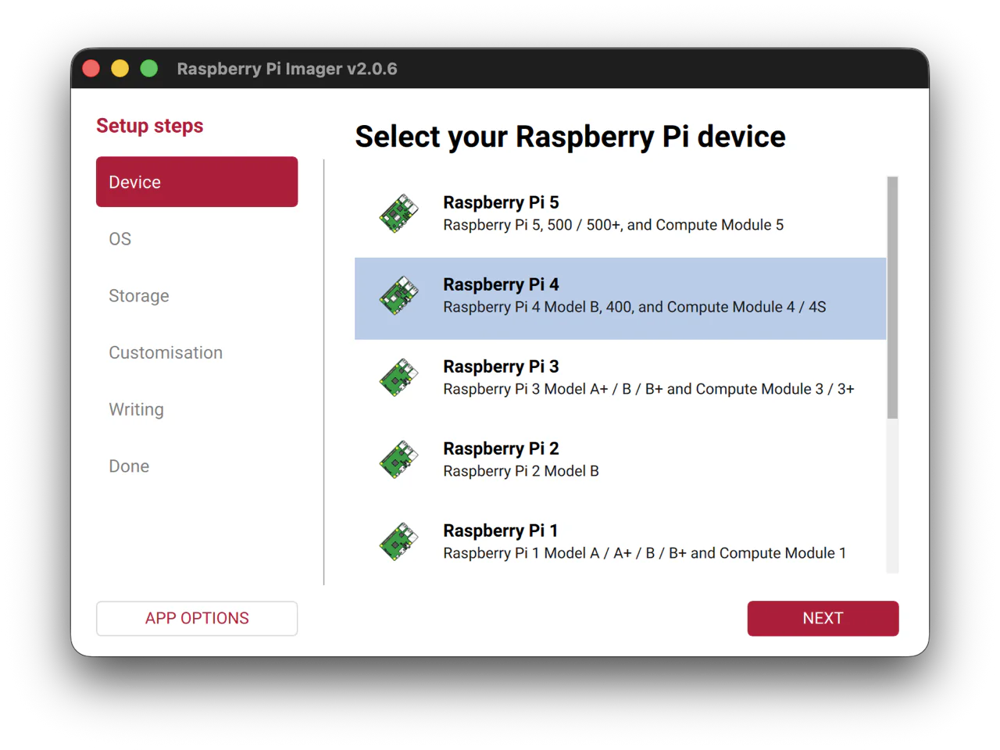
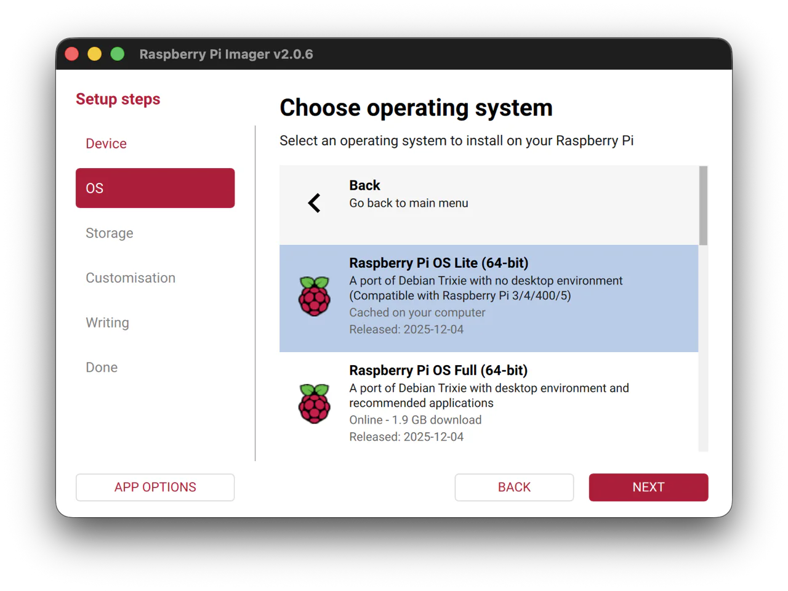
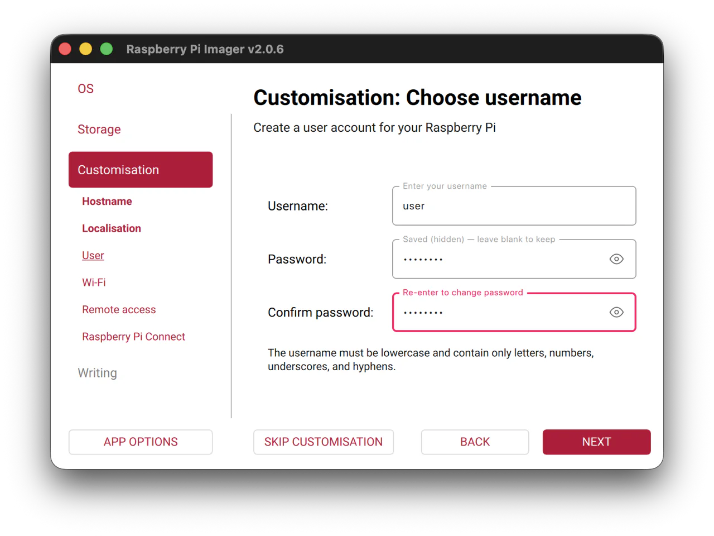
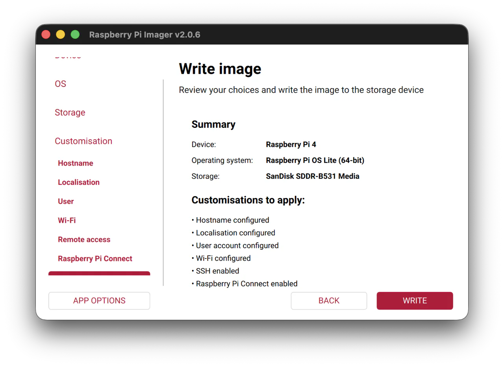
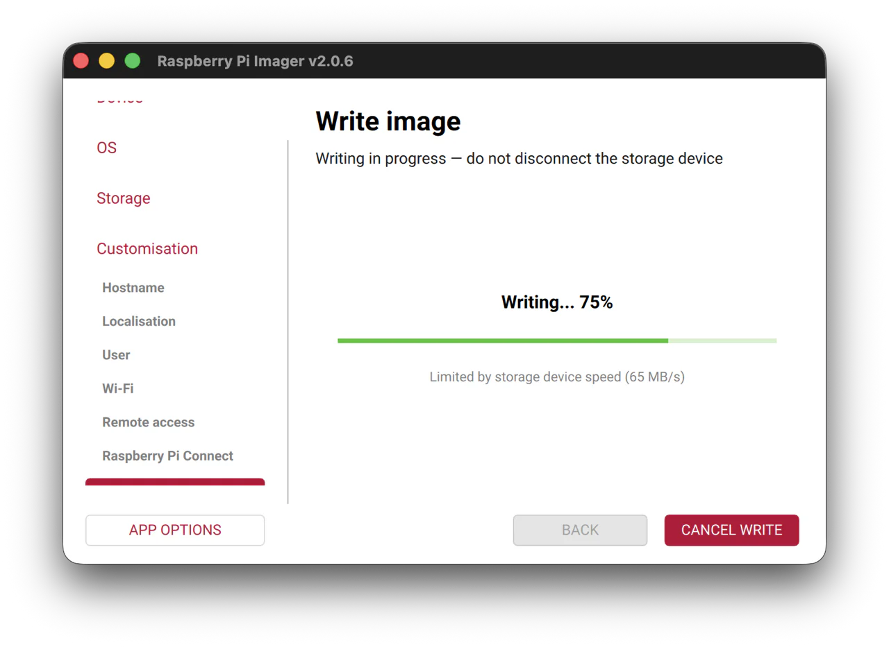
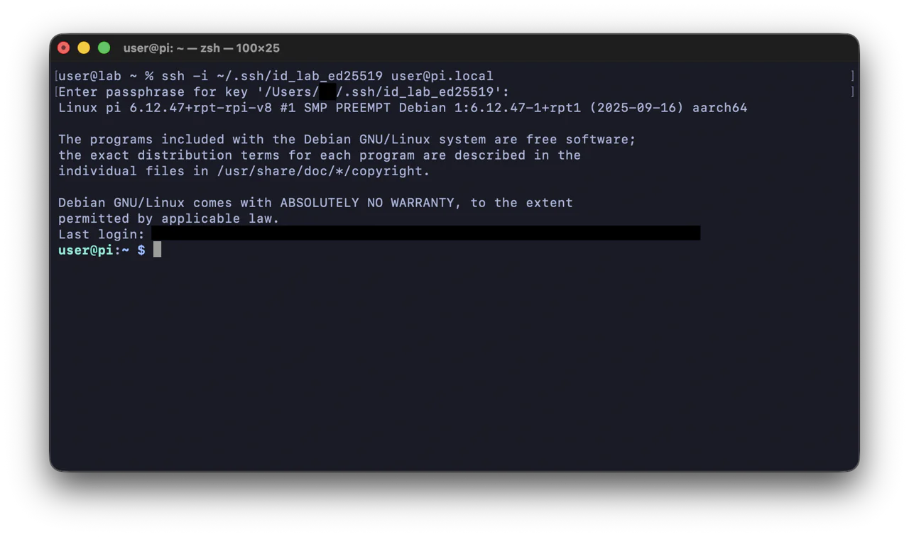

In this post I will walk through how I set up a Raspberry Pi (specifically a Raspberry Pi 4), configure a secure ssh remote connection, and then in the next part, document my learning experience of installing and setting up the Pi-hole software for DNS filtering and ad-blocking capabilities.
First of all, why do this? It's just an excuse to practice some basic networking on my home network, and to get more familiar with a bit of network administration. Oh, and also an excuse to play around with the Pi and some Linux.
So the basic steps so far are:
Set up the Raspberry Pi with a basic clean install of Linux, I'll go with Raspberry Pi OS Lite.
Configure the Raspberry Pi with a remote ssh connection.
Install Pi-hole, and any other necessary software with a remote ssh bash terminal.
Configure the Pi-hole and learn how to use it to suite my situation.
Setting up the Pi
Setting up the pi was really easy. The best and easiest way to set it up is to go to https://www.raspberrypi.com/software/, get the Raspberry Pi imager software, install it, and use it to create an image of the OS of your choice on the microSD card - which will then be slotted into the Pi's card reader.
Choose your Pi hardware
This is pretty self explanatory, just choose what Pi model you have.

Choose the OS
Next, I had to choose an operating system. It seems that with the pi you can use many Linux distributions, as long as they are ARM based (because the pi has a CPU with ARM architecture). Apparently, the constraints of the Pi's compute power should also be taken into consideration when choosing an OS.
I decided to go with the Raspberry Pi OS Lite (64-bit) version, because it's recommended, supported, lightweight, headless (I want to get better with the CLI), and it's Debian based (same as Kali and Ubuntu etc.), so will feel a bit familiar moving between those distros while learning.

Select your microSD card
Just select the microSD card you have plugged in, the one you will be slotting into the Pi after installing the OS.

Choose the hostname
Choose the hostname of your Raspberry Pi. This I'll use to be able to connect from my laptop via ssh later. I just named it pi to keep it simple for documenting here, and because it's going to be the only Pi on my local network. This can easily be changed later.

Choose username
This will be my main (or first) user account used to login to the Pi. I'll also be needing this to ssh in later. Choose a username and password that makes sense for your situation.

Choose wi-fi
I think this is optional (like a few of these customisation settings), but it is convenient to already have the wifi configured in the installation process, because it'll allow me to not need any keyboard, monitor, or ethernet cable plugged in to be able to establish a connection to the pi's terminal initially.

SSH authentication
This part is crucial to my set up. Since i want to run the Pi remotely and headless (without a monitor), i need to configure a way to establish a secure ssh connection. This imager software makes it really easy.
After enabling ssh, i'm given two authentication options: password or public key. I've researched around previously on which is better, and the consensus online seems to be that using the public key method is the preferred method as it is more secure and can be more convenient too.

To use this method you first need to generate a public and private key pair using the ssh-keygen command in the terminal. The resulting generated key pair will be saved by default in ~/.ssh or the equivalent /Users/user/.ssh. There, two keys will be generated: a private key and a public key. The private key is to be stored on the client computer (my laptop, the machine i will be connecting to the pi/host from), the private key is the equivalent of the password or 'secret' which will prove our authorization with the public key and authenticate. The public key is to be stored on the host machine (the pi or server to be accessed remotely). This public key (as the names denotes) isn't a secret or the password key, so it doesn't need to be kept safe like the private key does.
The private key by default will look like this id_ed25519 and the public key will look like this id_ed25519.pub.
The command is as follows:
ssh-keygen -t ed25519 -C "lab-›pi+server" -f ~/.ssh/id_lab_ed25519
- The option -t specifies the keygen type, ed25519 is considered the standard.
- -C sets a comment for the key files, allowing for identification of which key is which later.
- -f specifies the output file name and location.
All of these settings are optional and you can simply use: ssh-keygen
which will set the default for everything. In my case, i wanted to create a ssh key pair with a non-default name to differentiate it from a key pair i had already created for a different server.
You can also set a passphase for authenticating with the key pair for an added layer of security.
My output can be seen below.

Raspberry Pi connect
This is an entirely optional but useful way to connect to your pi remotely in your browser with screen sharing or with just a remote shell. Pi connect uses WebRTC to setup a secure connection peer to peer.
Finalize and write the image
Check that all of the configurations we just made are what we want, and confirm the write details.

Continue on and write the image...

And we're finished setting up the Pi. Now just eject the microSD and slot it into the card reader in the Pi, and power it on. From here we just need to establish the ssh connection to access the cli of the Pi, and then we can start with installing the Pi-hole.

Connecting to the Pi
Now that the Pi is powered on, I want to connect via ssh.
ssh user@pi.local
This should ordinarily work, but i ran into an issue unfortunately (permission denied):

After some investigating, and by running the command:
ssh -v user@pi.local
I can see that OpenSSH is trying all of the default public and private keys in the default locations, but eventually says "No more authentication methods to try".

I looked into it a bit and it seems that because i chose a custom key name earlier: id_lab_ed25519, OpenSSH doesn't look for that to authenticate by default. I troubleshot this by trying to connect by explicitly defining the private key i wanted to use to connect. The command to do this is:
ssh -i ~/.ssh/id_lab_ed25519 user@pi.local
After running the command and entering the passphrase, i successfully connected to the Pi via ssh.

To optimize this a bit, i found a way to ssh into the pi without having to be explicit each time. I added / edited the config file at ~/.ssh/config to include a shortcut command:
Host pi
HostName pi.local
User user
IdentityFile ~/.ssh/id_lab_ed25519
IdentitiesOnly yes
With this now, to connect to the Pi, all a have to do is type: ssh pi, and the pi command will automatically use this host identity information to grab the correct hostname, user, and private key file 👍